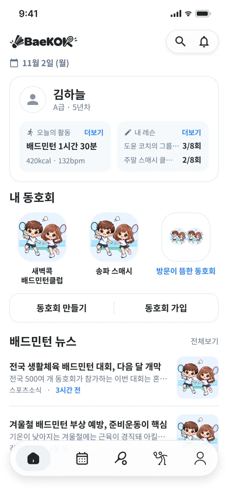
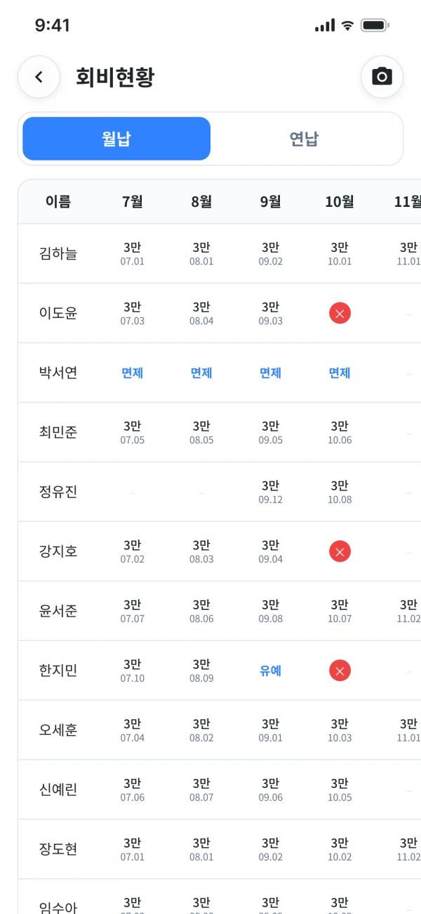
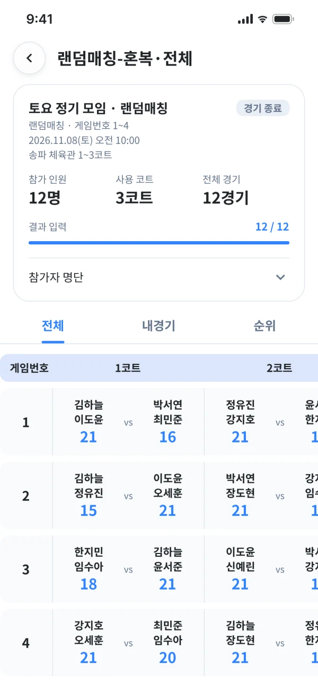
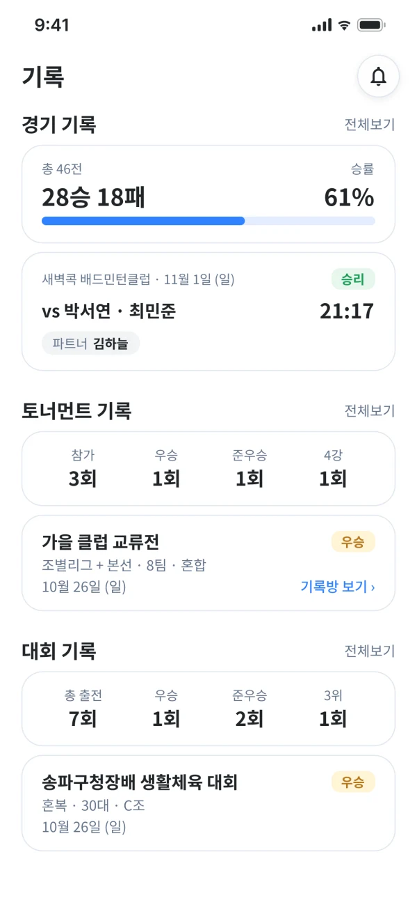
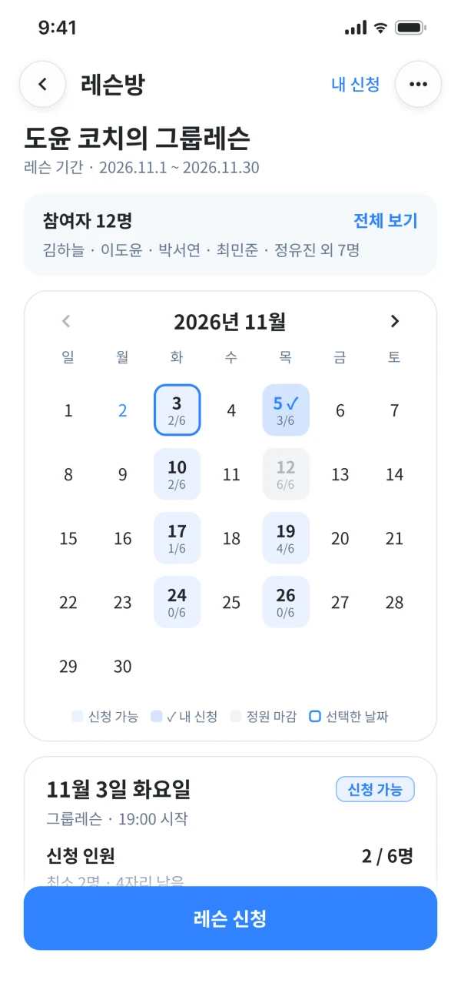

왜 배콕을 만드는가
동호회 운영은 통합해서 더 쉽게 만들고, 회원 한 명 한 명의 배드민턴 활동은 계속 기록으로 남도록 만들기 위해서예요.
🏸 동호회 운영도, 나의 배드민턴 기록도 배콕 하나로
회원 명단은 밴드에, 회비 정산은 엑셀에, 경기 소식은 카카오톡에,
출석 체크는 종이 위에 흩어져 있진 않나요?
배콕은 이런 동호회 운영을 하나의 앱으로 모으고, 그 활동이 쌓여
나의 배드민턴 기록이 되도록 연결합니다.
이런 고민, 익숙하지 않나요?
동호회 운영은 통합해서 더 쉽게 만들고, 회원 한 명 한 명의 배드민턴 활동은 계속 기록으로 남도록 만들기 위해서예요.
회원·일정·회비·경기 같은 동호회 운영은 하나의 앱으로 모으고, 경기 기록·대회 기록·레슨 같은 개인 활동은 나의 성장 기록으로 쌓아가요.
동호회에서 뛴 경기가 그대로 나의 경기 기록으로 이어지고, 레슨 일지까지 쌓여 내가 얼마나 하고 어떻게 성장했는지 확인할 수 있어요.
🏸 동호회 관리
회원 관리부터 일정, 회비, 경기 운영까지 — 여러 도구에 나눠서 하던 일을 배콕 하나로 모아서 처리하세요.
초대 코드로 회원을 받고, 운영진 권한과 회원 활동 현황까지 한 곳에서 관리해요.
정기 일정은 캘린더에 자동으로 들어가고, 공지와 소식은 게시판에 모여요.
회비 현황표로 납부 여부를 한눈에 보고, 장부와 모임 정산까지 정리해요.
참석 투표로 인원이 모이면 급수와 복식 유형을 맞춰 대진을 바로 짜요.
📈 개인의 성장 스토리
배콕은 동호회 운영 도구에 머무르지 않아요. 내가 얼마나 활동했고 어떻게 성장하고 있는지, 나만의 배드민턴 기록으로 남겨요.
여러 동호회에서 뛴 경기를 모두 합쳐 보고, 잘 맞는 파트너도 확인해요.
동호회 밖에서 나간 대회 결과까지 직접 기록해 한곳에 모아요.
레슨방에서 수업을 신청하고, 일지가 쌓이면 다음에 연습할 기술을 추천받아요.
Apple 건강, Health Connect와 연동해 배드민턴 운동 기록을 자동으로 가져와요.
📱 앱 화면 미리 보기
동호회 운영부터 나의 기록까지, 지금 만들고 있는 배콕 앱의 화면이에요.

📱 배콕 홈
오늘 할 일과 내 동호회를 한눈에
앱을 열면 오늘의 운동과 이번 달 레슨 횟수, 가입한 동호회, 배드민턴 소식이 한 화면에 모여 있어요.
🏸 동호회 관리
우리 동호회가 한 화면에
동호회에 들어오면 소개와 정기 일정이 위에 보이고, 게시글·회원·경기·기록·정보 탭으로 필요한 곳에 바로 이동해요.

🏸 동호회 관리
누가 냈는지 표 한 장으로
회원별·월별 납부 여부를 표로 보고 바로 체크해요. 기록이 없는 달은 미납으로 표시돼 따로 정리하지 않아도 돼요.

🏸 동호회 관리
참석 인원이 모이면 대진 완성
참석 투표로 모인 인원으로 급수와 복식 유형을 맞춰 대진을 짜요. 경기가 끝나면 점수를 바로 입력해요.

📈 개인의 성장 스토리
경기·토너먼트·대회 기록을 한곳에
동호회에서 뛴 경기, 매치룸에서 연 토너먼트, 직접 나간 대회 결과까지 기록 탭 한곳에서 확인해요. 승률과 입상 횟수도 한눈에 보여요.

📈 개인의 성장 스토리
레슨 일정과 신청을 달력으로
코치가 연 수업 날짜를 달력에서 보고 바로 신청해요. 날짜마다 신청 인원과 남은 자리가 보이고, 내가 신청한 날은 따로 표시돼요.
출시 알림 받기
배콕은 출시를 준비하고 있어요. 출시 알림을 신청하면 앱이 나오는 날 가장 먼저 알려드릴게요.
출시 알림 받기App Store · Google Play 출시 준비 중이에요